import pandas as pd
# Import results from results-3-object-domh-data
combined = pd.read_csv('combined.txt', sep='\t')
Note
Identifying and addressing bounding issue for experiment 1. Total time used: 9h 7m (22.8%)
09.20-09.24, 09.40-10.30, 10.45-11.03: Troubleshooting experiment 1 mismatch
Trying to work out why the run with matching conditions for pre-screen 10 didn’t give a result matching the article. It had far fewer points, and the X and Y axis scale was much smaller. If adjust the axis limits to match the article, it becomes yet more obvious!
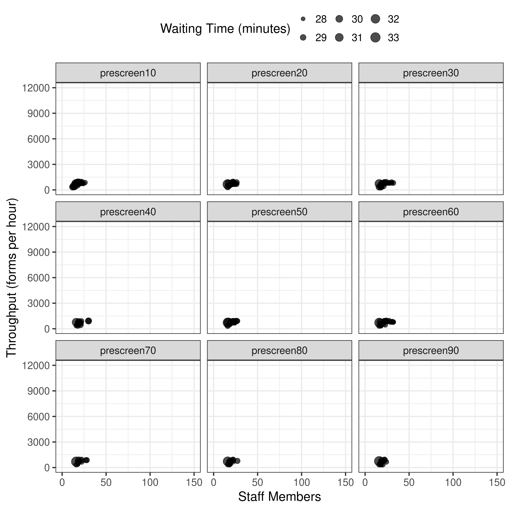
I tried to check whether this was the bi-objective or tri-objective model (it should be tri-objective for Experiment 1), but couldn’t find any mention of this in the code, nor spot where or how I would change the code for this.
I had a look in the original repository, looking for clues. It had folders with results:
results-2-obj-bounded-dohmh-dataresults-3-obj-bounded-dohmh-dataresults-3-obj-dohmh-dataold-results(which I disregarded)
Regarding these names:
- “DOHMH” stands for the NYC Department of Health and Mental Hygiene.
- I’m assuming that “2-obj” and “3-obj” refers to it being bi-objective and tri-objective models.
- I’m not certain what “bounded” refers to.
Plotting original results
To test whether there is any issue in my plotting, I will try using this data within my plotting functions, so I copied it into reproduction/, and renamed the folders from run dates to the prescreen parameter used. The folder results-3-obj-bounded-dohmh-data included combined.txt which combined all the pre-screened scenarios into one table (with a prescreen column).
Reflection
Handy that results were provided in the repository, enabling this type of check on the code I am using.
results.txt from results-3-obj-dohmh-data/
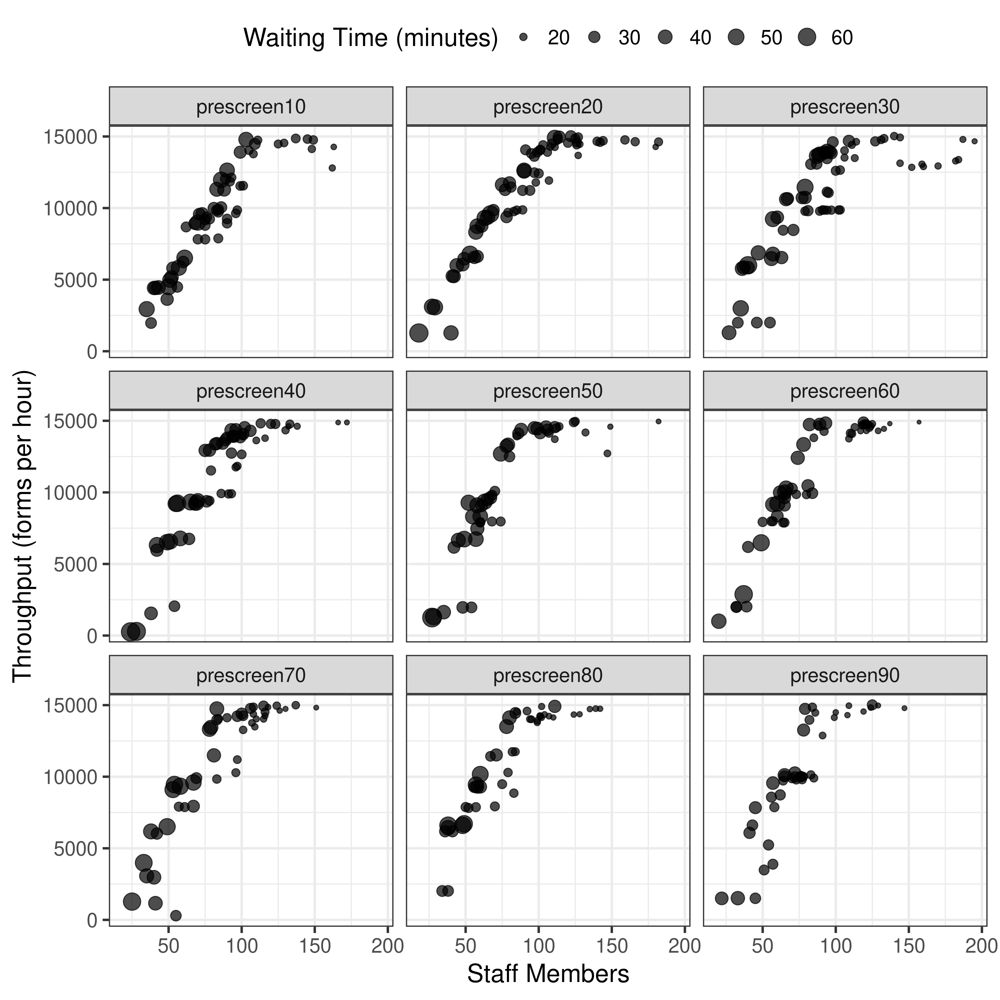
Just plot the ones with forms in range from Figure 6 from article.
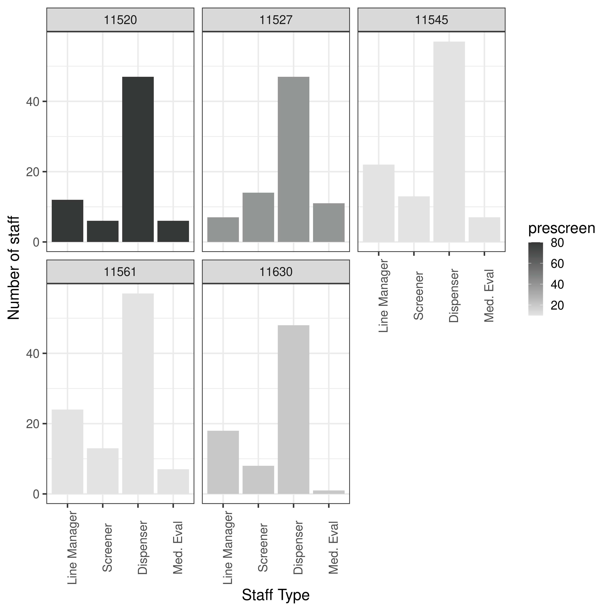
combined.txt from results-3-obj-dohmh-data/
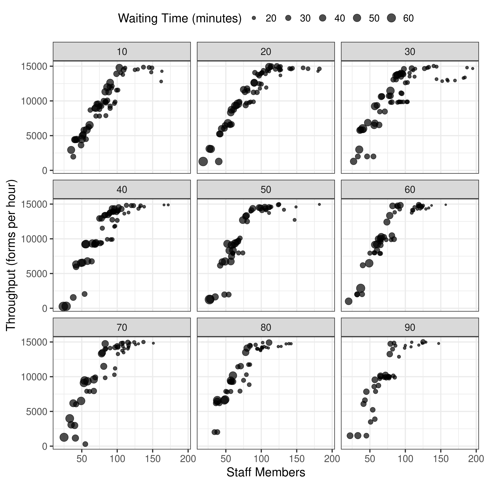
Just plot the ones with forms in range from Figure 6 from article.
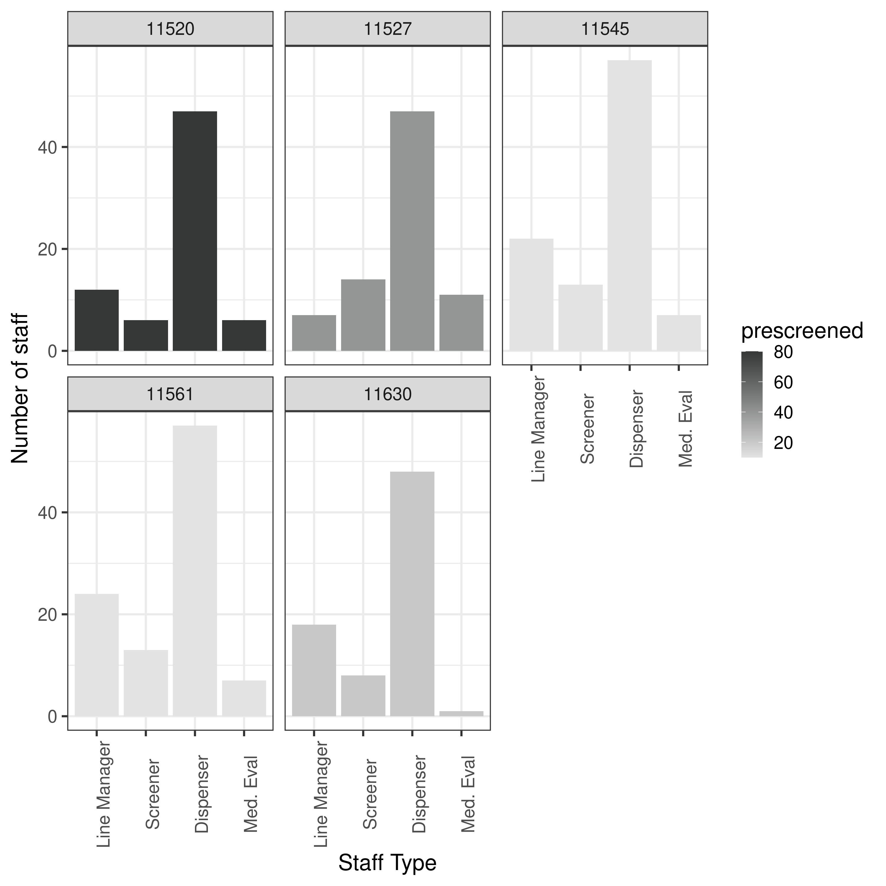
results.txt from results-3-obj-bounded-dohmh-data/
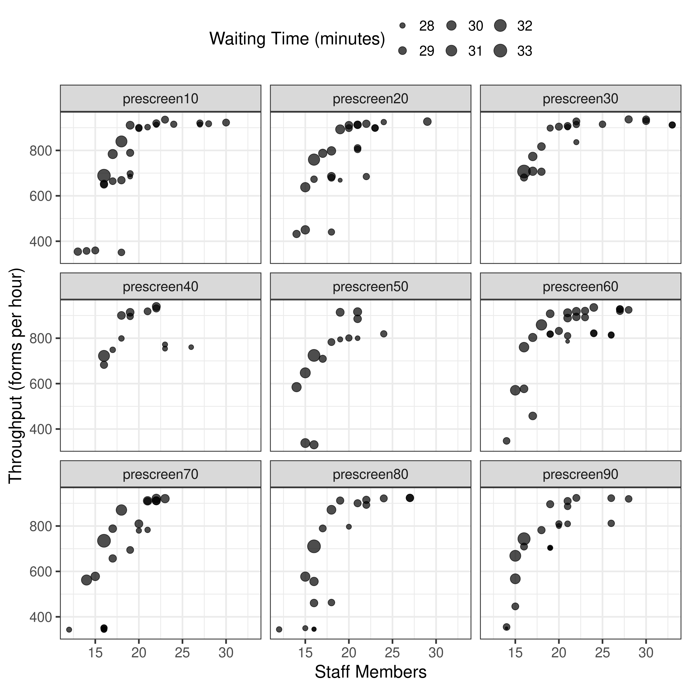
None of forms were in range of article so plot all.
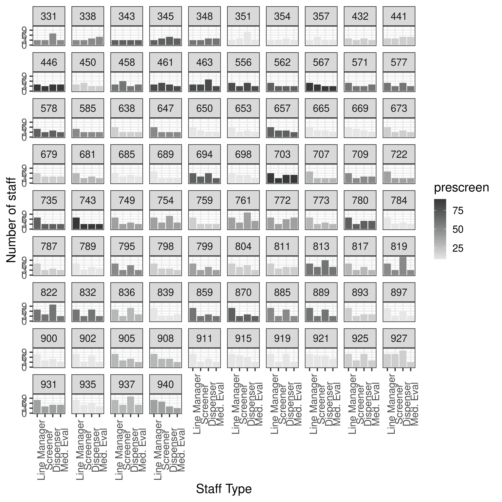
results.txt from results-2-obj-bounded-dohmh-data/
Although we don’t expect this to match up (as bi-objective data), I also plot this, just to help check if it indicates that I am using the bi-objective model, or if my current results look more similar to those above.
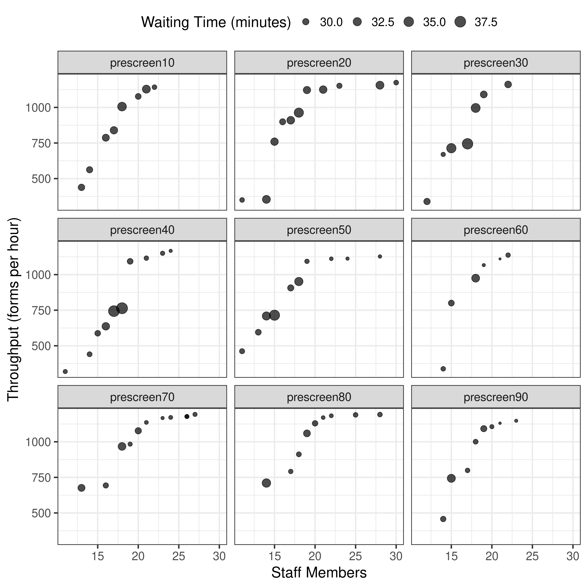
None of forms were in range of article so plot all.
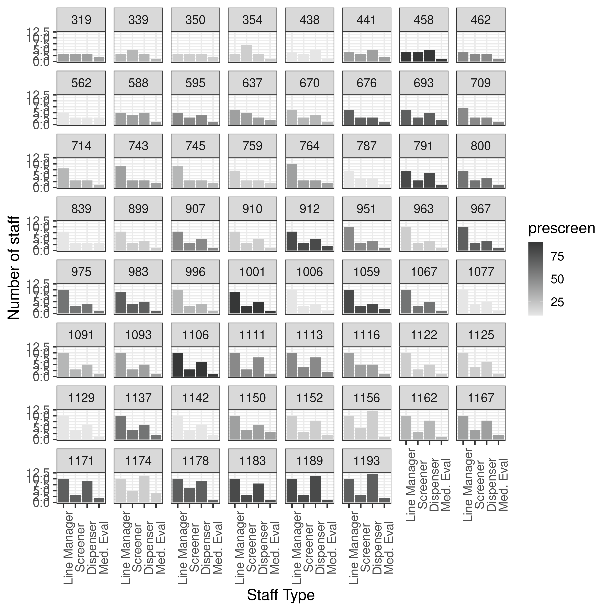
Reflections from making these plots
From these plots, it appears I am currently running something similar to results-3-obj-bounded-dohmh-data, as opposed to results-3-object-domh-data, as the former has similar X and Y axis scales to me, whilst the latter has similar to the paper.
The results from results-2-obj-bounded-dohmh-data/ look different to both - assuming same logic, the bi-objective results like Figure 7 are unbounded in the article.
Investigating how the data might be “bounded” in current run
Looking over the repository to try and understand what being “bounded” refers to, I can see there are bounds in StaffAllocationProblem() for the greeter, screener, dispenser and medic. These get set to self.boundingParameters.
# greeter, screener, dispenser, medic
self.lowerBounds = [3, 3, 3, 3]
self.upperBounds = [8, 8, 25, 8]
#self.upperBounds = [1, 60, 60, 5]
#self.bounder = inspyred.ec.Bounder(1, 4)
self.bounder = inspyred.ec.Bounder(self.lowerBounds, self.upperBounds)
self.seeds = seeds
self.boundingParameters = {}
self.boundingParameters['lowerBounds'] = self.lowerBounds
self.boundingParameters['upperBounds'] = self.upperBoundsThese would be used in evaluator() but the line is commented out, so not presently:
#capacities = myutils.boundingFunction(capacities, self.boundingParameters)However, they are currently used in generator():
greeters = random.randint(self.lowerBounds[0], self.upperBounds[0])
screeners = random.randint(self.lowerBounds[1], self.upperBounds[1])
dispensers = random.randint(self.lowerBounds[2], self.upperBounds[2])
medics = random.randint(self.lowerBounds[3], self.upperBounds[3])This is then used by ea.evolve() in nsga2.py. It takes the parameter bounder=problem.bounder. Problem is set in main.py/Experiment1.py as:
problem = StaffAllocationProblem.StaffAllocationProblem(seeds=self.seeds,
parameterReader=self.parameterReader)I double-checked the article for any mention of this bounding but didn’t find anything.
Reflection
Missing description of this bounding in article or repository (as far as I can see), that would’ve explained if I did or did not need it for the article.
11.11-11.26, 11.37-11.56: Removing “bounding” of results
Altering bounding
It appears that generator() requires some sort of boundaries. There was a commented out line:
# greeter, screener, dispenser, medic
self.lowerBounds = [3, 3, 3, 3]
self.upperBounds = [8, 8, 25, 8]
#self.upperBounds = [1, 60, 60, 5]This sets lower boundaries for the greeter and medic, but much higher for the screener and dispenser. Looking at the range of numbers of greeter, screener, dispenser and medic in results-3-object-domh-data…
combined['greeter'].describe()count 479.000000
mean 13.764092
std 8.185652
min 1.000000
25% 7.000000
50% 15.000000
75% 20.000000
max 46.000000
Name: greeter, dtype: float64combined['screener'].describe()count 479.000000
mean 17.532359
std 13.318535
min 1.000000
25% 6.000000
50% 13.000000
75% 26.000000
max 59.000000
Name: screener, dtype: float64combined['dispenser'].describe()count 479.000000
mean 45.970772
std 15.036329
min 1.000000
25% 38.000000
50% 52.000000
75% 58.000000
max 60.000000
Name: dispenser, dtype: float64combined['medic'].describe()count 479.000000
mean 8.995825
std 8.239104
min 1.000000
25% 5.000000
50% 6.000000
75% 11.000000
max 58.000000
Name: medic, dtype: float64Comparing the min and max of these against those boundaries mentioned above…
# greeter, screener, dispenser, medic
self.lowerBounds = [3, 3, 3, 3]
observed... [1, 1, 1, 1]
self.upperBounds = [8, 8, 25, 8]
#self.upperBounds = [1, 60, 60, 5]
observed... [46, 59, 60, 58]Hence, it seems reasonable to assume we could try a model with lower bounds all 1 and upper bounds all 60. I tried running this initially with 10 population 1 generation 1 run.
Reflection
Classes really nice way of organising, although ideally, any parameters might be changing could be external to classes (although this might just be an exception - will have to wait and see).
Plotting results from 10 pop 1 gen 1 run, now unbounded
This is starting to look more promising…
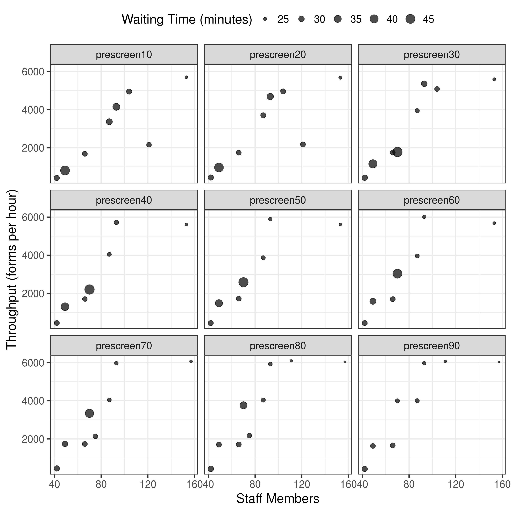 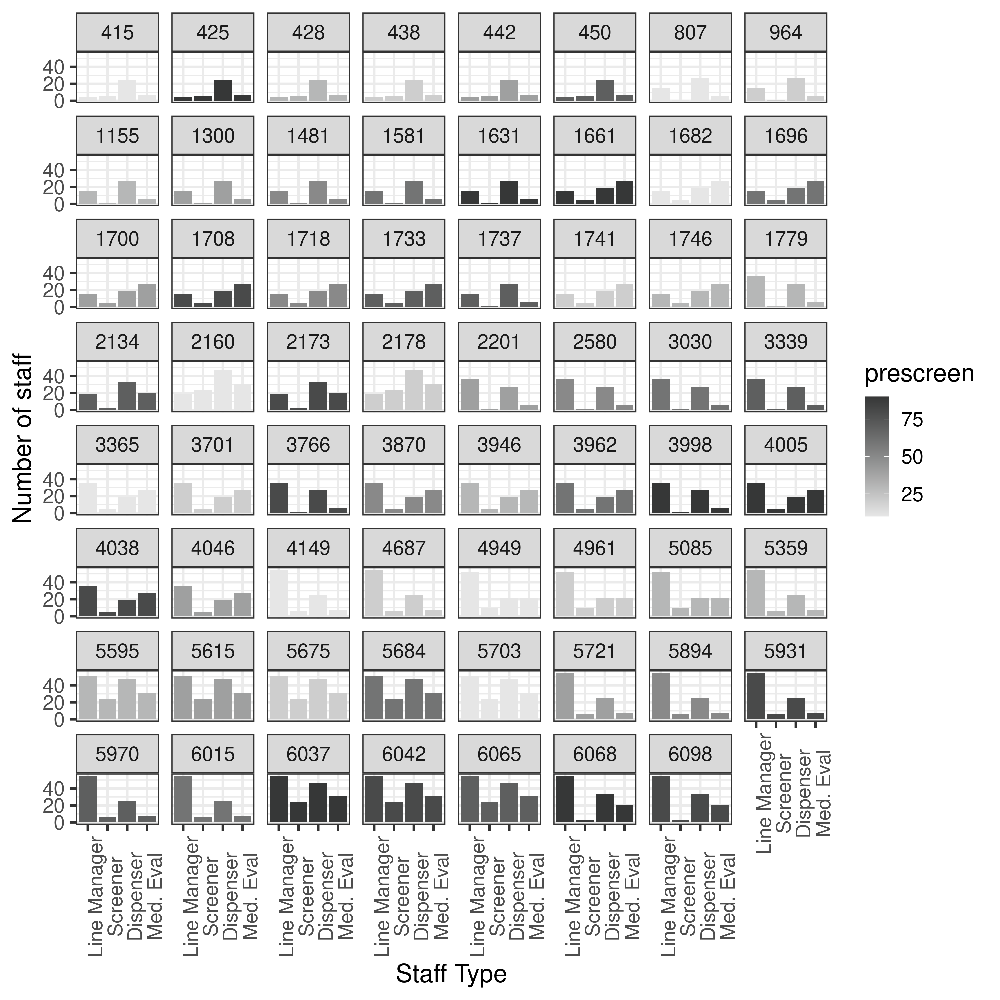
Then tried running with 100 pop 5 gen 1 run. Ran on remote machine:
source ~/miniconda3/bin/activate
conda activate hernandez2015
python -m Experiment1Observation about bi-objective and tri-objective code
Whilst looking into this, I also spotted what I think might be the way to alter between bi-objective and tri-objective, in StaffAllocationProblem():
self.maximize = True
#minimize Waiting time, minimize Resources, maximize throughput
#minimize resources, maximize throughput, minimize time
self.objectiveTypes = [False, True, False]We know from the paper that we have:
- Bi-objective model: minimise number of staff, maximise throughput
- Tri-objective model: minimise number of staff, maximise throughput, minimise waiting time
So, if maximise is true, then the current objective would be:
self.objectiveTypes = [False, True, False]
...[minimise, maximise, minimise]Hence, this is currently set-up as the tri-objective model - although then, it is unclear how to alter to bi-objective - perhaps just by shortening the list?
I looked at the commit history in the original repository and can see that a previous version of StaffAllocationProblem.py had:
#minimize resources, maximize throughput
self.objectiveTypes = [False, True]This was then changed in the latest commit to:
#minimize resources, maximize throughput, minimize time
self.objectiveTypes = [False, True, False]
Reflection
For this, it was difficult to identify how to change the code for the paper scenario, instructions for that would have been handy.
14.12-14.17, 15.50-16.11, 16.15-16.20: Results from 100 pop 5 gen 1 run “unbounded”
It is beginning to look more similar to the original, although y axis still quite different, so think may just need to try on full settings.
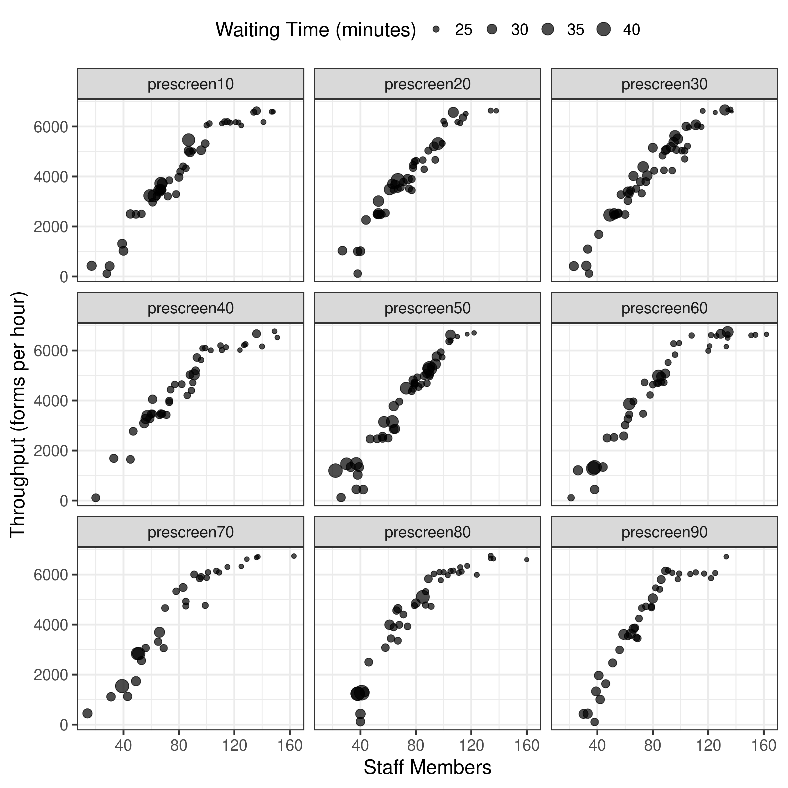 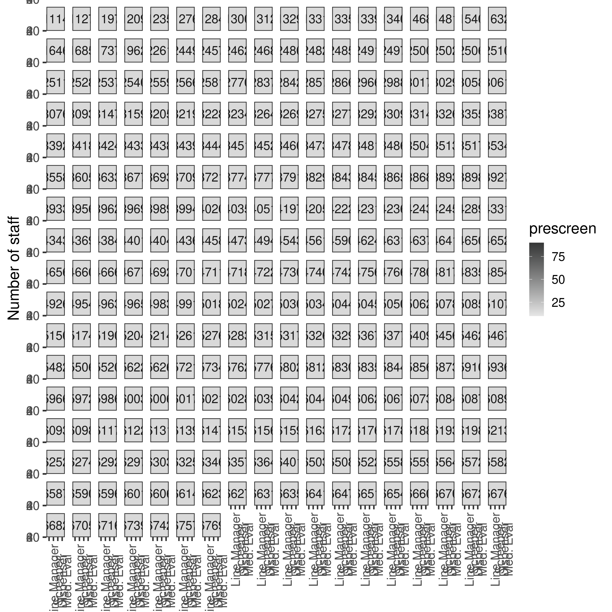
First though, tried re-running with 3 runs with one of the scenarios, to see how the results for that scenario altered. Indeed, they ended up different, and it took 3x as long (unsurprisingly). It gathered more points (similar to article)- although y axis scale is still quite different. Notably, changing from 10 pop and 1 generation to 100 pop and 5 generations hasn’t altered that. Hence, I am wary to spend hours trying one scenario with 100 pop 50 gen 3 run, as I think there might be another parameter not quite right here.
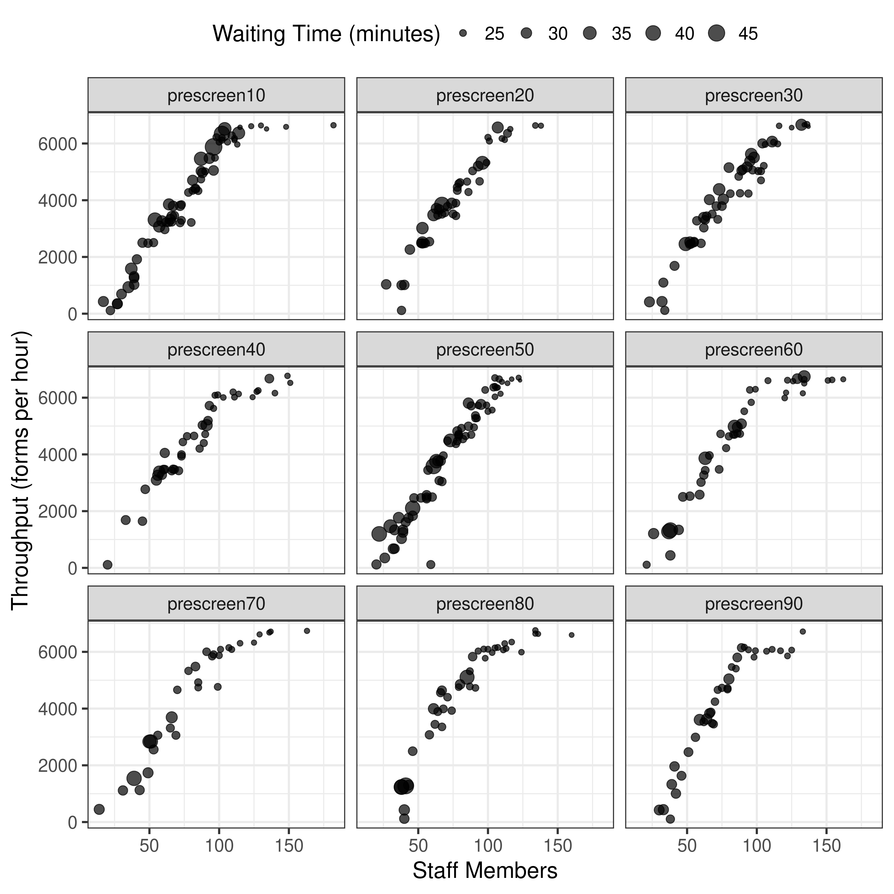 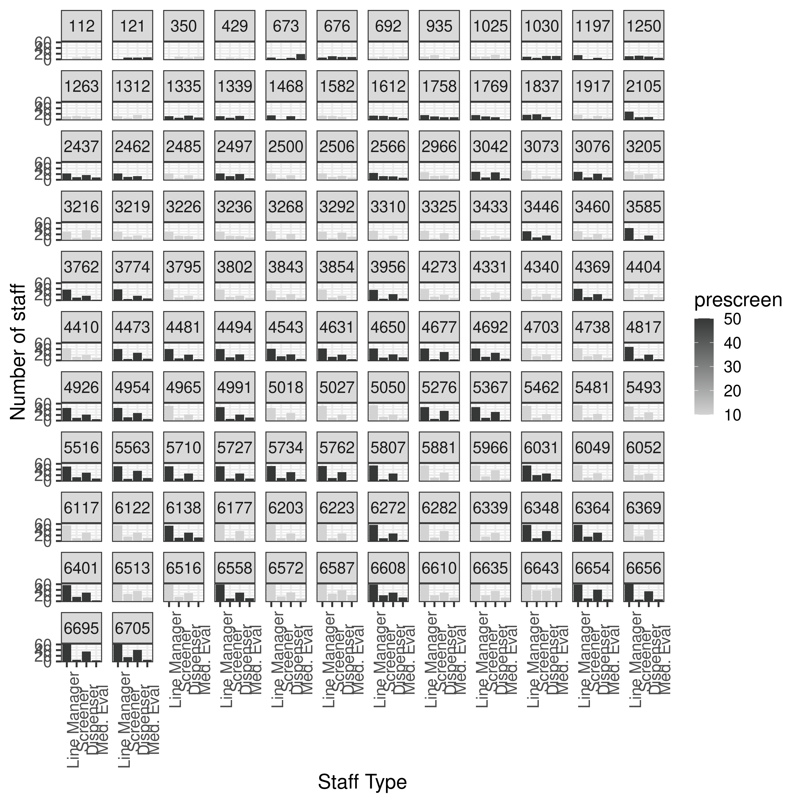
Given that the boundaries of the resources had a big impact previously, I had a look at what my range of boundaries looked like, compared to the results in the repository.
bounds = pd.read_csv("combined_100pop_5gen_1or3run.csv")bounds['greeter'].describe()count 416.000000
mean 39.173077
std 16.694097
min 1.000000
25% 29.000000
50% 42.000000
75% 54.000000
max 60.000000
Name: greeter, dtype: float64bounds['screener'].describe()count 416.000000
mean 11.329327
std 7.984606
min 1.000000
25% 6.000000
50% 10.000000
75% 14.000000
max 54.000000
Name: screener, dtype: float64bounds['dispenser'].describe()count 416.000000
mean 23.819712
std 10.380180
min 2.000000
25% 16.000000
50% 21.000000
75% 30.000000
max 58.000000
Name: dispenser, dtype: float64bounds['medic'].describe()count 416.000000
mean 6.139423
std 4.580186
min 1.000000
25% 3.000000
50% 6.000000
75% 7.000000
max 47.000000
Name: medic, dtype: float64The results are different, although I wouldn’t feel confident that it were due to the bounds themselves - moreso that the average and SD of the tries were quite different, with the original having higher averages.
Hence, I’m wondering if actually, it may be due to number of generations leading to premature convergence or similar, so will try that as next solution.
Timings
import sys
sys.path.append('../')
from timings import calculate_times
# Minutes used prior to today
used_to_date = 410
# Times from today
times = [
('09.20', '09.24'),
('09.40', '10.30'),
('10.45', '11.03'),
('11.11', '11.26'),
('11.37', '11.56'),
('14.12', '14.17'),
('15.50', '16.11'),
('16.15', '16.20')]
calculate_times(used_to_date, times)Time spent today: 137m, or 2h 17m
Total used to date: 547m, or 9h 7m
Time remaining: 1853m, or 30h 53m
Used 22.8% of 40 hours max